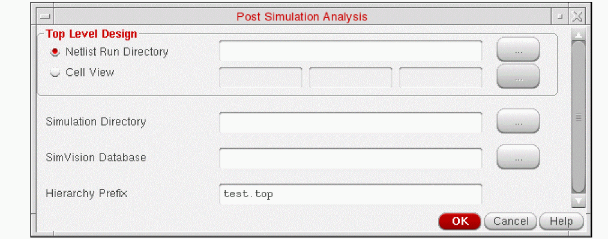

4
Running the Simulation
This chapter includes the following:
- Simulation Process Flowchart
- Introduction
- Setting SDF Delay Annotation
- Setting Simulation Setup Options
- Simulating a Design
- Cross-Selecting Design Objects
- Running a Batch Simulation
- Comparing Simulation Results
Simulation Process Flowchart
Introduction
In NC-Verilog Environment, you can run two types of simulation, namely:
In Interactive simulation you can select the steps to Compile, Elaborate and, Simulate. After the design is successfully compiled and elaborated, the SimVision user interface opens. You can use this interface interactively to simulate and debug the design.
When you run a batch simulation, the Compile, Elaborate and, Simulate are run one after the other and do not require any user intervention.
Before you run a simulation, you must set the SDF delay annotation options and the simulation setup options.
Setting SDF Delay Annotation
In the NC-Verilog Integration Environment, you can annotate delays into your design either before you start simulation. This section describes how to read in a delay file at simulation time zero. The term time zero refers to the time before you start interactive or batch simulations.
Virtuoso Schematic Editor recognizes delay files written in SDF (Standard Delay Format). You can use SDF to create either a delay file for backannotation or a constraints file for forward annotation.
You set the SDF delay annotation using the SDF Delay Annotation Setup form. This form is accessed from the Commands menu. Once you specify the various options in the
Setting the Delay Annotation Options
This table shows you how to fill in the delay annotations on the Setup Environment form.
How Delay Annotation Options Affect Simulation
Setting Simulation Setup Options
You use the Simulation Options form to set options that control simulation. These options let you control acceleration, delays, and pulses. The form also lets you specify the Verilog libraries and the executable that you want to use.
You set the simulation options using the Simulation Setup form. This form is accessed from the Commands menu. Once you specify the various options in the form, NC-Verilog Integration sets up the simulation according to the options that you have specified.
The following tables describe how to complete the Simulation Options form by specifying the options.
Options File
| Option | Description |
|
Type in a path to an options file relative to the directory from which you invoked the |
Reference Libraries Options
Debug Options
Delay Options
Pulse Control Options
Timing Options
| Option | Description |
|
Turn this option on to specify the various types of timing checks. |
Message Control Options
| Option | Description |
|
Turn this option on to suppress warnings. For example, turn this button on if you do not want to be slowed down by warnings displays during a large simulation. |
Simulating a Design
To simulate a design, you use the Simulate command in the Fixed menu. Alternatively you can also use the Simulate command from the Commands menu.
In interactive simulation, you select the option to compile, elaborate and simulate the design from the main NC-Verilog window. When you select all the three options, the system invokes SimVision’s Design Browser and the Console windows after it successfully compiles and elaborates the design.
In the Design Browser window, you can interactively simulate and debug the design. Using the Design Browser window, you can directly interact with the simulator to open a database, trace signals, single step, set breakpoints, observe signals, and perform many other functions to verify your design. The Design Browser is part of the Cadence SimVision Analysis environment which is a unified graphical debug environment for Cadence simulators. For more information on the SimVision user interface, refer to the Cadence SimVision Analysis Environment User Guide.
In interactive simulation, you can cross-select design objects between SimVision tools and Virtuoso Schematic Editor. For details, see “Cross-Selecting Objects during Interactive Simulation”.
If you want to view the simulation results output in the SimVision window, then the SKILL variable simNCVerilogNostdout should be set to nil in the CIW or .simrc before running the simulation. The default value of this variable is t.
Cross-Selecting Design Objects
You can cross-select the objects of a design between Virtuoso Schematic Editor and the SimVision tools. Cross-selecting objects helps you identify a specific object in the schematic design corresponding to the object in SimVision, and vice versa.
You can cross-select objects when you perform interactive simulation. You can also use the available simulation data of a design and cross-select the design objects. The simulation data can be generated using the NC-Verilog Integration Environment or a standalone Verilog simulator. You can also cross-select iterated instances.
The following figure illustrates how you can cross-select an object.
This section includes the following topics:
- Cross-Selecting Objects during Interactive Simulation
- Cross-Selecting Objects Using Simulation Data.
- Cross-Selecting Iterated Instances
Cross-Selecting Objects during Interactive Simulation
You can cross-select the objects of a design between SimVision tools and Virtuoso Schematic Editor when you perform interactive simulation. For information on interactive simulation, see “Introduction” and “Simulating a Design”.
To enable the feature to cross-select objects during interactive simulation:
-
Choose Setup — Cross Selection from the main NC-Verilog window. The Cross Selection Setup form appears.
- Select the Cross Selection from Schematic Editor to SimVision option to be able to select an object in the schematic design and have the corresponding simulation object selected in the SimVision user interface.
- Select the Cross Selection from SimVision to Schematic Editor option to be able to select a simulation object in SimVision and have the corresponding object selected in the schematic design.
- Click OK.
When SimVision is launched for interactive simulation, you can cross-select objects depending on the cross-selection setup. You can cross-select objects between Virtuoso Schematic Editor and SimVision tools, including SimVision Design Browser, SimVision Waveform, and SimVision Tracer. See the figure Cross-Selecting an Object.
Cross-Selecting Objects Using Simulation Data
You can cross-select the objects of a design between SimVision tools and Virtuoso Schematic Editor using the available simulation data to perform post-simulation analysis. The simulation data can be generated by the NC-Verilog Integration Environment or a standalone Verilog simulator. For example, you can generate the Verilog netlist of a design using the NC-Verilog Integration Environment. You can then use this netlist to simulate the design using the irun tool from the command line. The results of this simulation can be used to cross-select design objects between SimVision tools and Virtuoso Schematic Editor.
To specify the simulation data for cross-selecting design objects:
-
Choose Commands — Post Simulation Analysis from the main NC-Verilog window. The Post Simulation Analysis form appears.
 -
Specify the following information in the form. You can click the browse button next to a field to select the input data:
-
Click OK. The specified SimVision database opens in SimVision Design Browser and you can cross-select objects.
To cross-select an object, select it in SimVision Design Browser. The schematic with the corresponding object gets highlighted in Virtuoso Schematic Editor. You can cross-select objects between Virtuoso Schematic Editor and SimVision tools, including SimVision Design Browser, SimVision Waveform, and SimVision Tracer. See the figure Cross-Selecting an Object.
Cross-Selecting Iterated Instances
You can cross-select the iterated instances in a design during interactive simulation or post-simulation analysis.
To enable cross-selection of iterated instances:
-
Ensure that the iterated instances are printed in the expanded form in the netlist in the format baseName_bit_, such as
I0_0_.
For this, set the flagvlogExpandIteratedInsttotin Virtuoso CIW or in.simrcbefore netlisting the design. -
Set the flag to enable cross-selection of iterated instances
vlogProbeExpandedIterInsttotin Virtuoso CIW or in.simrc.
For cross-selection, the expanded names of the iterated instances in the netlist are mapped to their corresponding instances in the schematic. For example, the expanded iterated instance I1_0_ in the netlist is mapped to I1<0> in the schematic. When you select I1_0_ in SimVision, the corresponding instance I1<0> gets selected in Virtuoso Schematic Editor automatically.
The following figure illustrates the iterated instance I1<0:1> in the schematic view and its corresponding netlist, where the iterated instances are printed in the expanded form as I1_0_ and I1_1_. The figure also shows cross-selection of the iterated instance.
-
To avoid conflicts during cross-selection of iterated instances, ensure that the scalar instances in the schematic are not named in the format baseName_digits_, such as
I0_0_. Moreover, the schematic should not have illegal Verilog names that require mapping to other legal Verilog names. - If an iterated instance is selected in the schematic, its corresponding scalar instance in SimVision is not selected automatically because of ambiguity in the names.
For more information on iterated instances, see “Iterated Instances Support”.
Running a Batch Simulation
Running a batch simulation results in the execution of all the three options: Compile, Elaborate and Simulate in one go.
You can start batch simulation by selecting the Batch option in the main NC-Verilog window. The batch option is part of the Simulate Options in the main NC-Verilog window.
When a batch simulation finishes processing, a dialog box appears. The dialog box informs you that the batch job in the specified run directory completed successfully.
Monitoring Batch Simulations
The NC-Verilog Integration Environment lets you suspend batch jobs temporarily so that no processing time is allocated to the job. You can continue a suspended batch simulation whenever you choose.
To suspend or continue a batch simulation, you use the commands and options available on the Analysis Job Monitor form.
You can also change the priority of a batch job so that more or less processing time is allocated to the job.
To open the Job Monitor form, you select the Job Monitor command from the Results Menu in the main NC-Verilog window. The Analysis Job Monitor form appears.
The Analysis Job Monitor form displays the status for each batch job currently running or which has run during the current Schematic Editor session.
For more information on Job Monitor, see Job Monitor.
Comparing Simulation Results
SimCompare is used to compare the results obtained from different simulations. It provides a text description of any differences found.
Before using the tool, you need to set the simulation comparison options in the Simulation Comparison Setup form. This form can be accessed by selecting the Simulation Compare command from the Setup Menu in the main NC-Verilog window. For more information on the Simulation Comparison Setup form, refer to Simulation Compare.
To start the comparison of simulation result, select the Simulation Compare command from the Fixed Menu. Alternatively you can also select the Simulation Compare command from the Commands menu. On selection of Simulation Compare command, SimCompare is launched in the background. For more information on using the SimCompare tool, refer to the SimCompare User Guide.
Return to top